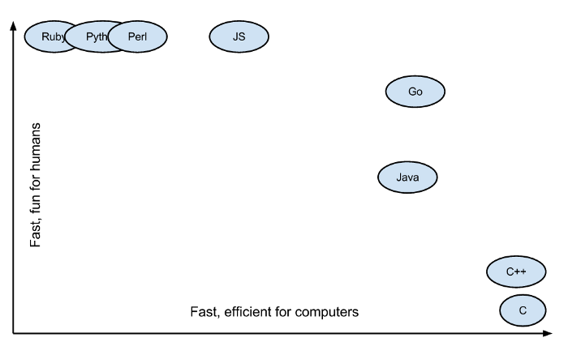
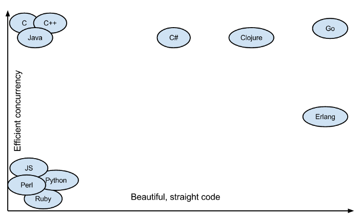
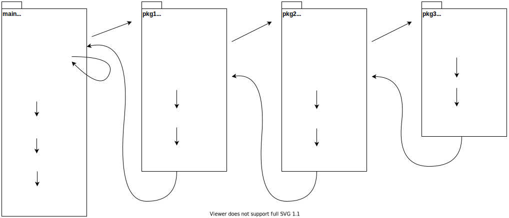

前几年接触到 Go ，使用一段时间之后就发现这就是我需要的语言。作为一个诞生了只有 10 年的语言，Go 的上升趋势非常之快，尤其受到 web 后端开发者的欢迎。
可是根据我的了解，身边的朋友多数还是停留在听说的阶段。了解不多，好处不明确，看起来很折腾，然后就算了。所以我想写一个关于 Go 语言的系列，希望给大家一些直观的认识。
这个系列的标题『Go 语言实战』（英文 Golang In Action）跟一本 Go 的入门书撞了，但我实在觉得这个名字很好，也想提醒自己先实战落地，尽量不要一下子涉及太多干巴巴的理论，所以先用着。我没看过那本书，内容如有雷同，纯属巧合。
目标读者
本系列的目标读者，暂时定位是：
- 有其它语言编程经历，对 Go 感兴趣，希望快速了解和上手 Go；
- 尝试过 Go，希望进一步系统了解和学习。
对于零编程基础、希望同时学习如何编程的朋友来说，这些文章可能省略了部分编程的基础知识。我不确定是否能达到学习编程的效果。如果你们愿意，可以尝试关注我的文章，并参与讨论。文章没有涉及的基础知识和练习，我尝试给出自学建议，或者在评论、群聊中解答。
如果你不愿意或者抽不出时间练习和讨论，希望只是看文章就能学会，我想很难达到效果。
而如果你已经用 Go 写过一些项目，对 Go 有一定的认知，这个系列的文章为了迁就不同人的水平，对你来说也许会过于浅显。当然，如果有大佬愿意指正，甚至参与讨论，在群聊里指导，那是求之不得。
为什么是 Go
主流的语言
主流编程语言的排名，根据不同的统计口径略有差异，但前几名基本逃脱不了： C、C++、Java、Python、JavaScript。它们各有所长，互相补充，选择它们当中某几种的组合，就可以包揽几乎所有类型的开发：
C / C++：硬件相关、操作系统相关、性能极端敏感
直接跟硬件设备、系统接口打交道，亲自管理内存，避免中间层浪费性能。可以写驱动、嵌入式软件、系统组件、桌面软件和大型游戏。当然，如果对性能足够敏感，对开发成本不敏感，理论上除了 web 前端外的所有软件都可以用 C / C++ 完成。
Java：桌面、Android、web 服务
如果不需要跟硬件和系统深入打交道，对性能要求不那么极端，又考虑开发效率，Java 则是最主流的选择。JVM 屏蔽了部分技术细节，背后又有多年积累的强大第三方类库（尤其是 Spring 的一系列框架），使 Java 成为企业级软件开发的不二之选。
Python：脚本、数据处理、web 服务
如果对性能要求进一步放宽，希望提升开发效率，Python 就成了首选。在各种内部使用场景，或者是用户不多的小型服务，性能根本不重要；相反快速落地跑起来特别重要。Python 语法简洁直观，表达能力强，类库也相当丰富（尤其是数据处理、机器学习这一块），大幅降低了非计算机科学科班人员（统计学家、数学家、AI 研究员）的编程门槛，成为了计算机与其他学科交叉领域以及快速原型的第一语言。
JavaScript 比较特殊。它是 web 前端的唯一语言（浏览器不支持别的），不可被替代。另一方面，虽然通过 node.js 具备了全栈能力，js 的语言特性决定了在前端以外的领域跟专门的语言还是有一定差距，可以作为小团队或者小服务的快速落地选择，却很难替代其它语言。这两点决定了，js 跟其它语言的比较没有太大意义。
你可能会产生一个疑问：
这些语言还不够吗，为什么还要费劲巴拉再学一个 Go 语言？
痛点
看一下这样的场景：
C / C++ 适合开发偏底层、性能敏感的需求。C 简洁但表达力比较弱； C++ 范式较多容易出错；内存管理和并发都是大坑。
一般的做法，是通过自行开发和引用第三方库，引入相关的类库和规范，去解决这些问题。小心翼翼地挑选库，没有合适的就自行开发，制定规范，说服团队的人达成一致，开发辅助工具和编写静态检查…… 然后，你基本上等于自行发明了 Go 的部分特性 。但肯定没有 Go 实现语言级支持那么简洁方便。
实际上，前金山和盛大的架构师、现七牛云 CEO 许式伟就做过这种事，他用 C++ 开发出了 CERL 库。但在他用了一周 Go 之后，彻底放弃 CERL，改为使用 Go。 大家可以看他的自述 《许式伟：我与Go语言的这十年》。
Java（实际上是 Spring 套件）是web 服务最主流的选择。Java 有大量从业人员、企业级的框架，也在过去积累了大量的成功案例。与这些优点相比，语法稍显啰嗦、新特性大幅改动语言、线程重所以大规模并发需要额外引入协程支持等等，都不算什么问题。
让 Java 略显老态的，可能是（微）服务化 和 容器化 的大背景下，JVM 的摆放位置。从前，编译语言需要为不同平台解决依赖并编译，而 Java 只需要安装一个 JVM，就把平台差异给抹平。单体应用时代，服务器不多，JVM 是配置环境早期一劳永逸的事，当然比每个版本都折腾依赖和交叉编译省事。
微服务 和 容器 把这个对比给逆转了。 微服务大量的应用实例，手动配置环境变得不再现实；JVM 对容器而言，无论容量还是启动速度，都有点太重。另一边，容器把依赖和编译变成了几个镜像的事，不再复杂，编译成二进制开始比虚拟机语言和解释器语言更便利。
远程开发过一个系统，使用者毫无技术背景。服务除了部署在阿里云上，也有备份在个人电脑上离线演示的需求。很难想象该如何远程指导他们安装 JVM 并配置环境变量，可能还需要 Tomcat，然后正确启停服务。最后他们并没有去安装 JVM，只是直接运行收到的可执行文件，Go 写的。 注意这里还没有涉及服务化，没有 Docker 容器。这是我的亲身经历。
Python 分做大项目还是小工具。
大项目的问题是，规模上去之后，难以通过静态分析发现潜在问题，后续对开发团队的素质要求会越来越高。因为这点，也因为性能问题，Python 开发大型项目似乎不是主流，更多用在脚本、小项目、内部工具上。坚持使用 Python 的团队，往往对代码简洁清晰有追求。这时候，简洁程度相近，更容易发现错误、速度更快的 Go，就很有诱惑力了。
Python 也有一个运行时，有跟 JVM 类似的问题。Python 自然是脚本和小工具的首选语言，我曾经写过不少。在自己机器和固定几个服务器执行时，没有任何问题。可当需要把工具分享出去时，特别是分享给非开发岗的同事和朋友时，类似 JVM 的问题就出现了。这些需要分享出去的工具，最后都用 Go 重写了一遍。
借网上两张图来说明（来源：https://medium.com/@kevalpatel2106/why-should-you-learn-go-f607681fad65）
这篇文章我也做了简单的评论，请看《为什么你应该学 Go？》

Go 寻求对人友好和对机器友好的平衡。
Go 诞生得晚，所以对于并发的支持可以从一开始就考虑在内。协程（coroutine）和 CSP 等理论虽然很早就有，但是在早些年还不够流行。现在像 Java 也通过一些第三方库引入了对 协程 和 CSP 模型的支持，但这种支持肯定不如语言内置支持来得简洁有效。

Go 内置 goroutine（go 协程） 和 CSP （Communicating Sequential Processes 通信顺序进程）支持，帮助写出既直观又高效的并发代码。
左下角的语言在诞生之初就没有考虑并发的问题。
这两张图可能略有点夸张，显得不需权衡就可以我都要；Go 比较靠近右上角，只是可能没有那么右上。但 Go 平衡得比较好，横轴和纵轴都有很好的表现是真的。
即使是 Go 吹，也得承认 Go 有很多不足。除非是底层技术或者计算理论的重大革新，新语言不过是重新做一次前人做过的选择题。Go 诞生得晚，吸收了更多经验教训，更符合一部分人的需要。但为了保持最主要的几个优势（像更快的编译和执行速度、更低的心智负担），也做出很多让步，有做不到做不好的地方（如泛型）。
这些选择解决了一批人的痛点，不可能满足所有应用场景和需要：
- 设备或系统深度绑定、极端的性能或者资源要求，还是得 C 和 C++。Go 处理这些场景需要借助 cgo 访问 C，如果项目规模不大，还不如直接写 C。
- 对于性能、正确性、可用性要求非常苛刻的业务，特别是不必做服务治理的单体应用，Java 的开发框架久经考验，积累了更多成熟的类库和调优经验。相比之下年轻的 Go 虽然在快速追赶，类库的选择范围暂时还窄一些。
- 至于处理各种数据，追求快速改动、只在本地运行的脚本，Python 就很好。静态强类型反而是累赘。
环境配置
我之前已经写过几篇关于 Go 语言环境配置的文章，在 1.13 包管理正式转向 go module 后，又重新写了两篇。
当前 Go 的最新版本是 1.15。Go 1 承诺接口稳定，向后兼容（backwards compatibility，兼容老代码），最近版本的改动主要集中在编译器、工具链 和 bug fix 上。从使用的角度最大的变动是 1.11 ~ 1.14 之间持续改进的 go module ，所以环境配置直接参考 1.13 时的文章即可。
请根据平台选择：（先把下面的配置教程看完，再接着往下走）
- Linux / Mac ：配置 1.13+ 的 golang 环境
- Windows：配置 1.13+ 的 golang 环境（Windows 篇）
IDE 方面，大家普遍对 GoLand 和 VS Code 评价很高。不差钱可以选择前者，功能更强响应更快；开源的后者也很不错，机器配置低时偶有卡顿不至于影响使用。
Hello World
不能免俗地，我们从 Hello World 程序开始。
都这样开头是有原因的，打印一句话仅仅依赖一个函数，涉及的知识点最少。今天的导入有点长，尽量避免再展开更多复杂的内容。
创建项目
这里假定你已经完成了环境配置，并按照建议将 GO111MODULE 设为 on。（国内为了默认启用 proxy，只能为 on。如果你不知道我说什么，请回到配置教程。）
换言之，包管理使用 Go Module 模式，哪怕只是写最简单的 Hello World，也需要建立 module。
Module 模式下，项目可以随便放在任何方便的地方。为项目新建一个目录，然后在根目录打开一个命令行（Win: cmd / Linux&Mac: Terminal，你也可以在 IDE 里打开，VS Code: View > Terminal，后续不再解释），执行：
|
|
你会看到根目录多了一个 go.mod 文件，里面记录了模块名、go 版本，以后还会用来记录依赖信息。
这就建立了一个名为 hello 的 module。这个名字你可以自己改。命名规范等讲到托管再说。现在可以先用小写字母、数字、减号- 的组合（字母开头）先随便起。
代码
然后新建一个 main.go 写代码。
以下代码请务必自己敲键盘输入。只有这样，才能明确了解这些到底都是什么符号。
如果误输了看起来相似的符号，像输入中文标点，就会出错。这是复制粘贴无法体会的。
|
|
代码跑起来有几个选择，初期可以按方便的来。仍然是在刚才的命令行，为了熟悉，也请手敲不要复制：
直接运行
go run main.go编译后运行
1234# 先编译go build# 编译结果是模块名，执行时替换成你的模块名./helloIDE 有执行插件，可以直接运行
为了帮助理解后续的加载流程，试着加入 常量、变量和初始化函数：
|
|
程序结构
理论知识可能枯燥，但绕不过去，只好尽量分散每次讲一点。
现在你已经把第一个 Go 程序跑起来，我们接着聊聊一个程序的结构。
包管理
Go 语言程序组织的基本单位是包（package）。
这点有点像 Java，都是通过一个类似 URL 的地址来唯一确定一个包，并以此引用。但是两者又有很多的不同。
以下对比主要方便有 Java 经验的朋友快速理解。没写过 Java 的朋友可以跳过 Java 部分。
myproj/src/com/example/foo/bar/pkg1/MyClass.java
|
|
myproj/foo/bar/pkg1/whatever.go
|
|
example.com/other/dir/file-name-not-matters.go
|
|
- 包名
- Java 包名类似 URL 域名部分，以
.隔开。为了确保全网唯一性，一般以作者的域名作为前缀（如example.com，作为包名前缀时倒序从顶级域名写起）。无论声明还是导入，都需要写完整的包名。 - Go （基于 Go Module 的包管理）则多出 module 这个概念：module 是一到多个放在一起的包的集合。完整的包路径包含 module 名 和 相对 module 的文件夹路径（module 名如
example.com/myporj，在 module 根目录的go.mod里定义，一般对应托管地址）。Go 的 包名 与 包路径互相独立：声明、引用时用包名；导入时用包路径。没有特殊理由，包名一般与所在目录保持一致，避免调用方还要查看包名。
- Java 包名类似 URL 域名部分，以
- 最小单位
- Java 中类（广义的类，包括 抽象类 和 接口）是唯一的一等公民，所有成员都无法脱离类存在。所以包管理的最小单位其实是 类。同一个包允许有多个
.java文件，每个文件是一个类。导入时也是导入类。 - Go 则以包为最小单位。同一个包允许有多个
.go文件，但都属于同一个包，分开写只是方便管理，编译时会自动合并。导入包后，通过包名引用该包下的公开成员（更准确的说法是 exported 成员）。
- Java 中类（广义的类，包括 抽象类 和 接口）是唯一的一等公民，所有成员都无法脱离类存在。所以包管理的最小单位其实是 类。同一个包允许有多个
对于 module 和 package ，这里先留个印象，如果觉得信息量大可以先不深究。更多关于 Go 包管理的讨论，可以看这篇 《golang 1.13 - module VS package》。
程序入口
Go 的可执行程序，必定包含一个 main 包，里面有一个签名为 main() 的函数。这就是程序的执行入口。这跟 C style 语言非常类似，不过 Go 的 main 函数既没有参数，也没有返回值。
如果需要解析命令行参数，需要导入 os 包通过 os.Args 获取（也有第三方包封装了更方便易用的接口）。类似地，如果错误退出想返回错误码，也是通过 os 包的 os.Exit(code) 进行。
初始化顺序
会自动调用的特殊函数除了 main 包的 main 函数以外，还有就是签名为 init() 的函数。
每个包允许有零到多个 init 函数。它们会在包被第一次导入时，常量、变量初始化之后被调用。同包的多个 init 函数会按照某种顺序依次执行。官方没有对顺序作出任何保证，最好当作乱序执行，程序逻辑不要依赖执行顺序。
整个程序的初始化顺序从加载 main 包开始，然后递归加载导入的包。
在被加载的包内部，先完成所有依赖包的加载和初始化（如果是加载过的包，则跳过初始化），然后初始化当前包的常量、变量，执行所有 init 函数。

main 包 import pkg2 时，pkg2 已经完成了初始化，直接导入即可
在依赖最底层的包（同时不依赖任何别的包）最晚被加载，却最早完成初始化。相反 main 包第一个被加载，却最后完成初始化，然后调用 main 函数。
Go 不允许循环导入。
被依赖方的初始化过程，不能依赖任何依赖方创建的东西。如， A import B，则不仅 B 不能导入 A，而且在 B 初始化的过程中要当 A 不存在，不能依赖于 A 创建的全局状态 或 依赖注入。
特别地，main 作为所有初始化完成之后才调用的函数，不能被任何初始化过程依赖。
最后
第一篇不可避免要导入一些概念，尽管一再删减，抽象的内容还是聊得有点多，先到这里。理论的内容，等接触一段时间，有了实际体会再补不迟。
因为照顾不同读者的需要，也因为是第一篇，我对内容的深浅繁简没有把握，需要根据反馈调整。没有涉及到的内容，只能通过评论和群聊补充。新朋友可以添加微信号『存档君（MrArchive）』，说明来意后加群讨论。
LeetCode
掌握编程语言仅仅是软件开发的第一步，后面还要掌握一定的 数据结构、算法 以及 具体业务的知识。就像掌握了画笔和颜料的使用，不代表就能画出漂亮的画作。
从头学编程的朋友，推荐在掌握语言基础之后，尝试去解决 https://leetcode-cn.com/ easy 的题目。
做现实中的项目，我们要先识别需求（有时产品的同学会帮忙），将需求转换为技术描述，定义和分解问题，然后把问题逐个解决，组装成最终的软件。新手可能还没开始写代码就被难住了。相比之下，LeetCode 将经典问题抽象简化，直接给定了输入输出的数据类型和范围，你只需要考虑代码的实现。这种命题作文乃至看图说话，是一个很好的开始。
有编程经验的朋友，当然也可以刷题来加强，难度根据自己的实际情况挑选。我也会不定期发布用 Go 刷 LeetCode 的题解。
其他资源
推荐一些 Go 的学习资源作为补充：
菜鸟教程：https://www.runoob.com/go/go-tutorial.html
比较简略，很多知识没有涉及。但是胜在足够简略，初学者看了不会晕。可以当做入门的手册。
Go by samples：https://gobyexample.com/
不废话，直接上例子。适合有一定基础的朋友，直接看例子学习。

本文为本人原创，采用知识共享 “署名-非商业性使用-相同方式共享” 4.0 (CC BY-NC-SA 4.0)”许可协议进行许可。
本作品可自由复制、传播及基于本作品进行演绎创作。如有以上需要，请留言告知，在文章开头明显位置加上署名（Jayce Chant）、原链接及许可协议信息，并明确指出修改（如有），不得用于商业用途。谢谢合作。
请点击查看协议的中文摘要。